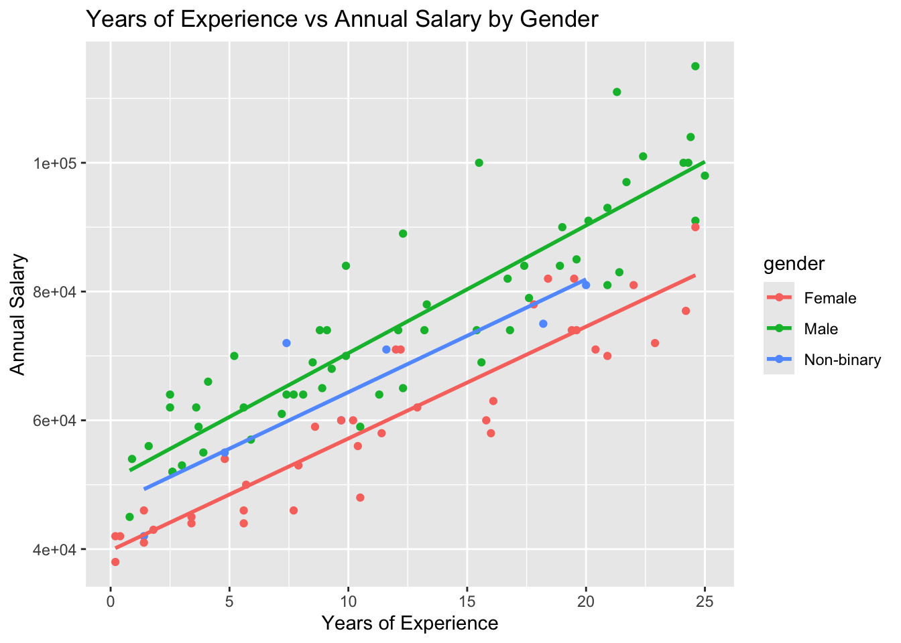
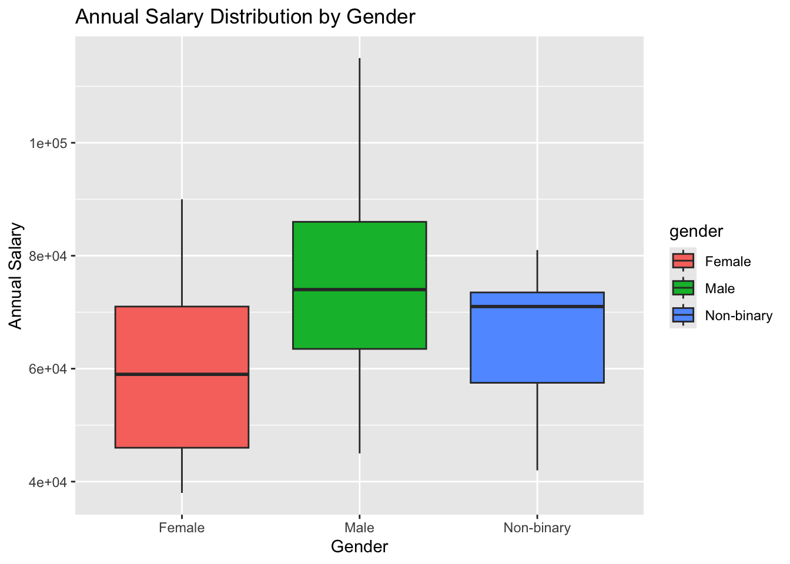

library(ggplot2)
library(dplyr)
Attaching package: 'dplyr'The following objects are masked from 'package:stats':
filter, lagThe following objects are masked from 'package:base':
intersect, setdiff, setequal, unionLoad the libraries we needed. Be sure to install.packages() where needed.
library(ggplot2)
library(dplyr)
Attaching package: 'dplyr'The following objects are masked from 'package:stats':
filter, lagThe following objects are masked from 'package:base':
intersect, setdiff, setequal, unionThere are multiple options when conducting a bivariate analysis. In this file, I provide some very basic code to help you get started on your analysis for your paper.
We’ll use data on the gender pay gap that I have prepared for today’s discussion.
pay_gap_data <- read.csv("https://raw.githubusercontent.com/data-202/sp25/refs/heads/master/data/pay_data.csv")RQ: What is the relationship between years of experience and annual salary?
We’ll start with a scatterplot to visualize the data.
# Let's visualize the dat a
ggplot(pay_gap_data, aes(x = years_experience, y = annual_salary, color = gender)) +
geom_point() +
geom_smooth(method = "lm", se = FALSE) +
labs(title = "Years of Experience vs Annual Salary by Gender",
x = "Years of Experience", y = "Annual Salary")`geom_smooth()` using formula = 'y ~ x'
We’ll then conduct a correlation analysis.
cor.test(pay_gap_data$years_experience, pay_gap_data$annual_salary)
Pearson's product-moment correlation
data: pay_gap_data$years_experience and pay_gap_data$annual_salary
t = 15.413, df = 98, p-value < 2.2e-16
alternative hypothesis: true correlation is not equal to 0
95 percent confidence interval:
0.7726828 0.8906291
sample estimates:
cor
0.8414022 Given the nature of our variables, we can run a simple linear regression.
model <- lm(annual_salary ~ years_experience, data = pay_gap_data)We then want to call a summary of our model.
summary(model)
Call:
lm(formula = annual_salary ~ years_experience, data = pay_gap_data)
Residuals:
Min 1Q Median 3Q Max
-18654.6 -6516.7 -72.8 6192.4 24311.7
Coefficients:
Estimate Std. Error t value Pr(>|t|)
(Intercept) 45733.6 1765.1 25.91 <2e-16 ***
years_experience 1932.6 125.4 15.41 <2e-16 ***
---
Signif. codes: 0 '***' 0.001 '**' 0.01 '*' 0.05 '.' 0.1 ' ' 1
Residual standard error: 9339 on 98 degrees of freedom
Multiple R-squared: 0.708, Adjusted R-squared: 0.705
F-statistic: 237.6 on 1 and 98 DF, p-value: < 2.2e-16In a future class session, we’ll talk about model specifications and how to apply the tenets of critical quantification. For now, please focus on the code a nd syntax to help you get practice.
Given the categorical variables, we will conduct slightly different tests.
RQ: Is there an association between gender and job title?
table(pay_gap_data$gender, pay_gap_data$job_title)
Biologist Chemist Data Scientist Other Software Engineer
Female 8 7 6 10 6
Male 10 12 13 12 9
Non-binary 2 0 0 1 4chisq.test(pay_gap_data$gender, pay_gap_data$job_title)Warning in chisq.test(pay_gap_data$gender, pay_gap_data$job_title): Chi-squared
approximation may be incorrect
Pearson's Chi-squared test
data: pay_gap_data$gender and pay_gap_data$job_title
X-squared = 10.259, df = 8, p-value = 0.2473ggplot(pay_gap_data, aes(x = gender, y = annual_salary, fill = gender)) +
geom_boxplot() +
labs(title = "Annual Salary Distribution by Gender",
x = "Gender", y = "Annual Salary")
When we mix multiple types of variables, recall that there are additional tests that we can use.
anova_result <- aov(annual_salary ~ gender, data = pay_gap_data)summary(anova_result) Df Sum Sq Mean Sq F value Pr(>F)
gender 2 5.462e+09 2.731e+09 11.13 4.46e-05 ***
Residuals 97 2.380e+10 2.454e+08
---
Signif. codes: 0 '***' 0.001 '**' 0.01 '*' 0.05 '.' 0.1 ' ' 1t.test(annual_salary ~ gender, data = pay_gap_data[pay_gap_data$gender %in% c("Male", "Female"),])
Welch Two Sample t-test
data: annual_salary by gender
t = -4.7815, df = 84.835, p-value = 7.246e-06
alternative hypothesis: true difference in means between group Female and group Male is not equal to 0
95 percent confidence interval:
-21961.12 -9061.08
sample estimates:
mean in group Female mean in group Male
59756.76 75267.86 We can also do a multiple linear regression model.
multi_model <- lm(annual_salary ~ years_experience + gender, data = pay_gap_data)Then we call a summary of our model.
summary(multi_model)
Call:
lm(formula = annual_salary ~ years_experience + gender, data = pay_gap_data)
Residuals:
Min 1Q Median 3Q Max
-12628.5 -4703.1 -528.8 3620.1 19084.8
Coefficients:
Estimate Std. Error t value Pr(>|t|)
(Intercept) 38180.5 1521.7 25.091 < 2e-16 ***
years_experience 1878.4 90.8 20.688 < 2e-16 ***
genderMale 13724.7 1430.6 9.594 1.11e-15 ***
genderNon-binary 7346.5 2779.7 2.643 0.0096 **
---
Signif. codes: 0 '***' 0.001 '**' 0.01 '*' 0.05 '.' 0.1 ' ' 1
Residual standard error: 6740 on 96 degrees of freedom
Multiple R-squared: 0.851, Adjusted R-squared: 0.8463
F-statistic: 182.7 on 3 and 96 DF, p-value: < 2.2e-16